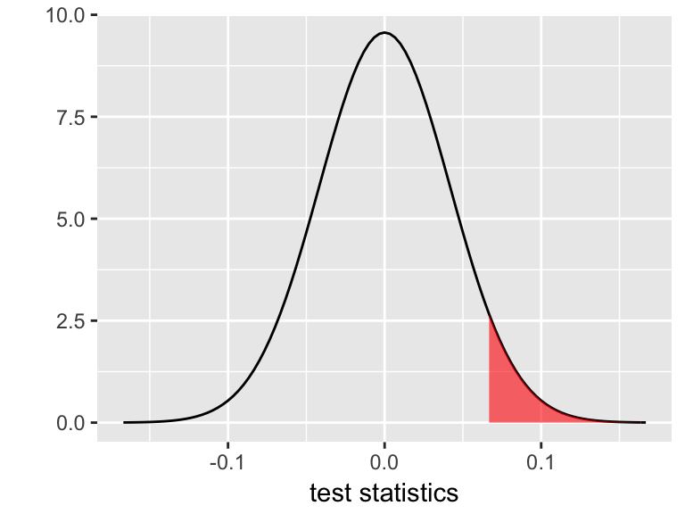

5.6 Homework 4: Hypothesis Testing
Directions:
Install the
lubridateandggmappackages in your console:install.packages("lubridate") install.packages("ggmap")Start a new RMarkdown document.
Load the following packages at the top of your Rmd:
dplyr,ggplot2,fivethirtyeight,infer,broom,lubridate,ggmap
Goals:
In this homework you will
- solidify your understanding of hypothesis tests;
- take a bootstrapping approach to hypothesis testing; and
- explore some common snags in hypothesis testing.
5.6.1 Bootstrap hypothesis testing + Multicollinearity
The bf data contains body measurements on 250 adult males. The original data are from K. Penrose, A. Nelson, and A. Fisher (1985), ”Generalized Body Composition Prediction Equation for Men Using Simple Measurement Techniques” (abstract), Medicine and Science in Sports and Exercise, 17(2), 189.
bf <- read.csv("https://www.macalester.edu/~ajohns24/data/bodyfatsub.csv")- BodyFat vs Hip & Weight
Construct the sample model of body fat percentage (
BodyFat) byHipcircumference (cm) andWeight(lb). Review theWeightcoefficient before moving on.Report & interpret the test statistic for the
Weightcoefficient.Report & interpret the p-value corresponding to the hypothesis that
Weightis positively associated withBodyFat.Recall that this p-value is calculated under the assumption that the CLT holds: IF \(H_0: \beta = 0\) holds, then \(\hat{\beta} \sim N(0, 0.0417^2)\). Thus the p-value is represented by the area of the shaded region below. Calculate this Normal probability using
pnorm(). Bonus: usept()for the \(t\) probability that’s actually reported in the summary table.- 
- Bootstrap hypothesis tests
Our hypothesis test conclusions depend in part on the p-value which depends upon the CLT which depends upon the validity of our model assumptions. Instead of relying on the parametric CLT assumption, we can calculate a bootstrap p-value.- Obtain 1000 bootstrap estimates of the
Weightparameter (for the same model as above with bothWeightandHipas explanatory variables).
- Create a new variable of
null_slopeswhich shifts your bootstrapWeightcoefficients so that they’re centered at 0, the null hypothesis value of theWeightcoefficient. Construct and describe a density plot of the 1000 bootstrapnull_slopes.
- Using only the 1000
null_slopeswith no CLT assumptions, approximate a p-value for the hypothesis test above. (This should be within \(\pm 0.03\) of what you observed for the classical approach!)
- Obtain 1000 bootstrap estimates of the
- A new model
- Noting that the p-value of the
Weightcoefficient is rather high, your friend concludes that weight isn’t associated with body fat percentage. Construct a model that refutes your friend’s mistake, report the model summary table, and provide specific evidence from this table that contradicts your friend’s claim.
- Explain why this happened, i.e. why the original model and your new model provide two different insights into the relationship between body fat percentage and weight.
- Noting that the p-value of the
TAKE HOME WARNING
The coefficient-related hypothesis tests reported in the model summary table must be interpreted in light of the other variables in the model. They indicate the significance of a term on top of / when controlling for other variables in the model, not simply the significance of a term on its own. This is especially important to keep in mind when working with multicollinear predictors. Thus it’s a good idea to start simple - examine models with fewer terms before jumping right into more complicated models!
5.6.2 Simpson’s Paradox
The data set
diam <- read.csv("https://www.macalester.edu/~ajohns24/data/Diamonds.csv")contains data on price, carat (size), color, and clarity of 308 diamonds. We want to explore the association between clarity & price. Clarity is classified as follows (in order from best to worst):
| Clarity | Description |
|---|---|
| IF | internally flawless (no internal imperfections) |
| VVS1 | very very slightly imperfect |
| VVS2 | |
| VS1 | very slightly imperfect |
| VS2 |
Before answering the questions below, think about what relationships you’d expect to see among these variables!
- Consider the relationship between
price&clarity.Construct & describe a plot of the relationship between price and clarity.
Construct a sample estimate of the model of
pricebyclarity.Which clarity has the highest predicted value (and what is this value)? Which clarity has the lowest predicted value (and what is this value)? Why are these results surprising? HINT: Don’t forget about the reference level.
Examine the p-values for each coefficient in the model. What do you conclude?
- The surprising results above can be explained by a confounding variable:
carat.- Construct & describe a visualization of the relationship between
price,clarity, andcarat.
- Fit the model of
price ~ clarity + carat.
If you want the extra practice (if not, move on): Interpret every coefficient, predict the price of a 0.5 carat VVS2 diamond, and write out a model of
pricebycaratfor the VVS2 group.When controlling for carat, which clarity has the highest expected price? Which has the lowest expected price?
The models with & without
caratlead to different conclusions about the relationship betweenpriceandclarity. This is called a Simpson’s Paradox. Explain why this happened. Construct a graphic to back you up.
- Construct & describe a visualization of the relationship between
5.6.3 Multiple Testing
In a paper published in the Proceedings of the Royal Society B - Biological Sciences (a reputable journal), Matthews et. al. asked mothers about their consumption of 132 different foods. For each food, they tested for an association with a higher incidence of male or female babies. Letting \(p\) be the proportion of babies that are male:
\[ \begin{split} H_0: & p = 0.5 \\ H_a: & p \ne 0.5 \\ \end{split} \]
NOTE: This test is concerned with a single population proportion (that of male babies). The foundations of this test are the same as for those we’ve discussed in class!
Suppose that NONE of the 132 foods are truly linked to rates of male and female babies (i.e. \(H_0\) is true in all 132 cases). Below you’ll simulate what might happen when we test each of these 132 hypotheses, each using data from a different random sample of 50 mothers.
To begin, import the list of 132 types of food:
foods <- read.csv("https://www.macalester.edu/~ajohns24/Data/BabyBoyFood.csv")
head(foods)
## Type
## 1 Beef, ground, regular, pan-cooked
## 2 Shredded wheat cereal
## 3 BF, cereal, rice w/apples, dry, prep w/ water
## 4 BF, sweet potatoes
## 5 Pear, raw (w/ peel)
## 6 Celery, raw- Let’s run an experiment. For each of the 132 foods, we’ll randomly assign 50 expectant mothers to a diet heavy in that food. We’ll then record the number of male/female babies born in each food treatment group.
For each of the 132 food groups, randomly generate the sex of the 50 babies born to mothers in that group:
# Set the seed set.seed(2018) # Randomly generate the number of male & female babies for each food births <- data.frame(nmales = rbinom(n = 132, size = 50, prob = 0.5)) %>% mutate(nfemales = 50 - nmales) %>% mutate(food = foods$Type)Notice that
birthscontains 132 rows. Each row indicates which food you fed to the 50 expectant mothers and the number of male/female babies born to these mothers. Which foods have the greatest discrepancy between male/female babies?- It’s reasonable to assume that, in the broader population from which we generated these data, there’s no association between birth sex and diet for any of these food groups. Yet for each food, we’ll use our sample data to test whether the birth rate of males significantly differs from 0.5. In doing so we might make a Type I error. What does this mean in our setting?
- Conclude that a food is linked to birth sex when it’s not.
- Conclude that a food is not linked to birth sex when it is.
- Conclude that a food is linked to birth sex when it’s not.
Use the following syntax to test each food group for a significant association with birth sex and add the corresponding p-values to your data set:
get_p <- births %>% group_by(1:n()) %>% do(prop.test(x = .$nmales, n = 50) %>% tidy()) births <- births %>% mutate(p.value = get_p$p.value)Check out your
birthsdata again. What proportion of the 132 tests produced Type I errors, i.e. hadp.value< 0.05 despite the fact that \(H_0\) is true? To what foods do these belong? Can you imagine the newspaper headlines that would trumpet these results?
- In the original Matthews’ study, the researchers found and trumpeted a correlation between male babies & mothers that eat breakfast cereal. The “findings” were picked up in popular media (just 1 example). The multiple testing performed in the study & replicated in our simulation is a real concern. In many applications, we might run thousands of hypothesis tests (eg: gene sequencing). Let’s explore the math behind this phenomenon. Assume we conduct each hypothesis test at the \(\alpha=0.05\) level.
If we conduct any single test, what’s the probability of making a Type I error when \(H_0\) is true? (Think back to the notes!)
What if we conduct two tests? Assuming \(H_0\) is true for both, what’s the probability that at least 1 results in a Type I error?
What if we conduct 100 tests?
In general, as the number of tests increase, the chance of observing at least one Type I error increases. One solution is to inflate the observed p-value from each test. For example, the (very simple) Bonferroni method penalizes for testing “too many” hypotheses by artificially inflating the p-value: \[\text{ Bonferroni-adjusted p-value } = \text{ observed p-value } * \text{ total # of tests} \] Calculate the Bonferroni-adjusted p-values for our 132 tests. Of your 132 tests, what percent are still significant? That is, what is the overall Type I error rate?
This is better. But can you think of any trade-offs of the Bonferroni correction?
TAKE HOME WARNING
Don’t fish for significance! If you test enough hypotheses, something will surely pop out as “significant” just by random chance. That is, the more hypotheses you test, the more likely you are to make a Type I error. Interpret others’ work with this in mind - were they fishing for significance? Is it possible that they’re reporting a Type I error? Do you think that you could reproduce their results in a new experiment?
5.6.4 Statistical vs Practical Significance
WARNING: Expect RStudio to run a bit slowly in this section. It’s the biggest data set we’ve worked with. If you choose, you can research the cache=TRUE argument for code chunks. If you choose to do so, you need to take care to “uncache” and then “recache” your cached code any time you make changes to that chunk.
You’ve likely seen the “NiceRide” bike stations around the UM campus! They’re the bright green bikes that members and casual riders can rent for short rides. NiceRide shared data here on every single rental in 2016. The Rides data below is a subset of just 40,000 of the >1,000,000 rides.
Rides <- read.csv("https://www.macalester.edu/~ajohns24/Data/NiceRide2016sub.csv")
dim(Rides)
## [1] 40000 8
head(Rides, 3)
## Start.date Start.station Start.station.number
## 1
## 2
## 3 8/21/2016 11:49 15th Ave SE & Como Ave SE 30110
## End.date End.station End.station.number
## 1
## 2
## 3 8/21/2016 11:55 4th Street & 13th Ave SE 30009
## Total.duration..seconds. Account.type
## 1 0
## 2 0
## 3 343 MemberA quick codebook:
Start.date= time/date at which the bike rental began
Start.station= where the bike was picked up
End.date= time/date at which the bike rental ended
End.station= where the bike was dropped off
Total.duration..seconds.= duration of the rental/ride in seconds
Account.type= whether the rider is a NiceRide member or just a casual rider
Let’s clean up this data. Try to do the following in 1 continuous series of pipes
%>%:- Rename “
Total.duration..seconds.” as “duration” (or just add a new variable calledduration).
- Keep only the
Start.date,Start.station,End.station,duration, andAccount.typevariables. HINT: Investigate theselect()function OR use indexing.
- Keep only the rides that lasted > 0 seconds.
Currently, the
Start.dateis a factor variable:class(Rides$Start.date)Create 2 variables from this infomation, a variable
hoursthat pulls the hour and a factor variablemonthsthat pulls the month. The following will come in handy:mydate <- as.factor(c("10/26/2016 13:20")) as.factor(hour(mdy_hm(mydate))) as.factor(month(mdy_hm(mydate)))
- Rename “
- Duration vs Membership Status
- Construct a visualization of the relationship between a ride’s log(duration) and the membership status of the rider. (Why log? Try using
durationfirst.)
- Construct a model of
log(duration)by membership status. Summarize the estimated difference in the typical duration of rides for casual riders vs members. Be sure to interpret on the non-log scale. Contextually, what do you think explains this difference?
- Do these data provide statistically significant evidence that casual riders tend to take longer rides?
- Construct a visualization of the relationship between a ride’s log(duration) and the membership status of the rider. (Why log? Try using
- Duration vs Month
- Construct a visualization of the relationship between a ride’s
log(duration)and the month in which the ride took place. NOTE: be sure thatmonthsis a factor/categorical variable!
- Construct a model of
log(duration)by month. Summarize the estimated difference in the typical duration of rides in April and May. On the non-log scale, you should find a difference of about 1 minute. Personally, this isn’t enough for me to think “Wow, people take longer rides in April!” That is, the difference is not practically significant.
- Do these data provide statistically significant evidence that casual riders tend to take longer rides? HINT: Check out the p-value.
- Parts b & c illustrate the difference between statistical significance and practical significance:
- Results are only practically significant if the observed effect size (observed difference between means, the magnitude of a regression coefficient, etc) is large enough to have practical meaning.
- Results are statistically significant if the p-value is small. However, a small p-value merely reflects the presence of an effect, not necessarily a meaningful magnitude of that effect.
- Results are only practically significant if the observed effect size (observed difference between means, the magnitude of a regression coefficient, etc) is large enough to have practical meaning.
- Construct a visualization of the relationship between a ride’s
- Play Around!
There are a lot of other features of the NiceRide data!Merge the
Rideswith the locations of theStations:Stations <- read.csv("https://www.macalester.edu/~ajohns24/Data/NiceRideStations.csv") #join the Stations and Rides MergedRides <- Rides %>% left_join(Stations, by=c(Start.station = "Station")) %>% rename(start_lat=Latitude, start_long=Longitude) %>% left_join(Stations, by=c(End.station = "Station")) %>% rename(end_lat=Latitude, end_long=Longitude)Plot a map of the NiceRides around Minneapolis:
MN<-get_stamenmap(c(-93.375,44.86,-93.05,45.04),zoom=14,maptype="terrain") ggmap(MN) + geom_segment(data=MergedRides, aes(x=start_long, y=start_lat, xend=end_long, yend=end_lat), alpha=0.07)Do the route distributions/choice differ by membership status? (Construct a visualization.)
How if at all does duration change by time of day? By time of day and membership status?
What other questions might we ask? Play around and see if you have any insight to add about riding patterns.